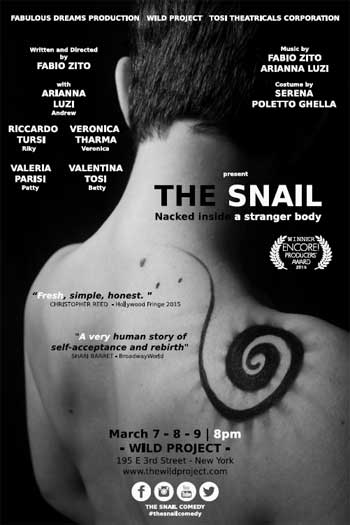
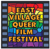

past performance |
|||
|
The Snail written and directed by Fabio Zito A co-production between Fabulous Dreams Production, Wild Project and Tosi Theatricals Corporation showtimes & tickets:March 7-9 @ 8pm "The Snail" is the story of the young boy, Andrew, locked in a body that he doesn't recognize: a woman's soul is a prisoner in a man's body. Born in a Italian family and in a world full of prejudice, Andrew plays a role that doesn't fit him until he decides to become a woman and start a new life being free to express finally herself to the world. Twelve ironic episodes describe his entire life, from the conception to his birth, his life's struggles and the re-birth. |
 | ||
|
PANEL AFTER-SHOW https://twitter.com/thesnailcomedy CAST RICCARDO TURSI (Ricky) made his way to Los Angeles via New York and Houston. where he was in productions at Silver House and H.a.d.a. Theatres. While in Italy, he acted on prestigious stages such as Teatro Piccolo (Milan), Teatro Ghione and Teatro Antigone in Rome; Recent credits include lead role in the Feature Film Gangster City and Co-Star role in the TV Web series "Marinho" and the Short Film "The Inventor". He performed as stand up comedian at Comedy Store, Hollywood Improv and also on the Comedy Time Network. VERONICA THARMA (Veronica) was born in India, grew up in France then after a year in London moved to LA in Nov 2011. Spotted by a model scout in Paris, she started modelling and she worked for local and international brands in Europe and Asia. From Paris she decided to move to London, where she worked in some commercials, short films and a feature. She then decided to take her career to the next level and made her move to Los Angeles. She has already worked on a feature, a play and a web series in LA. VALERIA PARISI (Patty) Valeria Parisi was born in Italy in 11/22/1988. She studied classical and contemporary dance for fifteen years in her hometown, and then she won several scholarships for MDM Academy, an important musical school situated in Milan, where she also studied acting and singing. Then she moved to New York to improve her artistics career. VALENTINA TOSI (Betty) After many years of Performing Arts' studies between Mantova, Verona and Castelfranco Veneto she graduated from “Scuola Del Musical” directed by Saverio Marconi and of “Musical Dance Master Academy” directed by Chiara Cattaneo in Milan. She produced shows between Italy and Switzerland such as “GYMNASIA – il regno del moviemento” the musical, the busking group “CRAZY DANCERS' CREW and “OLTRE” the musical. Proud CTI Alumn and TRU member she is now taking her career as producer to the next level in New York. TEAM WRITER AND DIRECTOR COSTUME DESIGNER CO-PRODUCER CO-PRODUCER CO-PRODUCER |
|||
upcoming performances |
|||
|  | |||
| EVQ Film Festival 2018 August 20-25 |
|||
performance archives |
|||
| 2018 | 2017 | 2016 | 2015 |
| 2014 | 2013 | 2012 | 2011 |
| 2010 | 2009 | 2008 | 2007 |